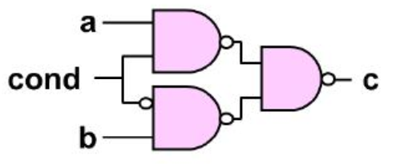
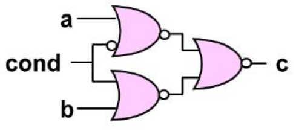
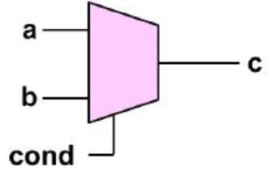
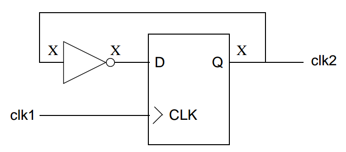

很多人在做Xprop仿真的时候大都是对仿真器加入一个选项，然后就跑仿真模型了，有了问题就开始反向调试，尝试看X是从哪来的，会不会有问题。
但不会细想里面到底发生了什么，而X的出现情况又是什么。最近察看了一些资料，把启发记录一下。
这里写的启发和总结主要是参考一片文章, [1]Stuart, “I’m Still In Love With My X”, Design and Verification Conference, 2013.
1. Data Type
首先要说的是可能多数人会有的一个误区, verilog/systemverilog不只有数据类型，还有变量类型和端口类型。
一般的代码中习惯的都只定义“logic a;”，但实际上数据类型logic只是表征了一个4态的数值集合(0,1,X,Z)，同理的还有bit(0,1)。但它并不表示a这个符号的语义。
符号还有一个变量类型的属性: var, reg, integer, time. 用以表示它到底是变量，数组，时间等等。所以，具体的应该是”var logic a;”.
一般若是省略了变量类型，编译器会自行地根据情况设置一个上去。
2. what is X? where is it from?
X是4态数值集合中的一个，用于表示逻辑值不明确的情况。
一般X出现的情况有以下几种:
- 没对信号初始化
- 没连接的端口信号
- 同一个信号，多个驱动源
- 低功耗仿真时的上电、掉电
- 数组访问时索引超界
- 不满足建立时间和保持时间
- 设计者自己赋值的X
这里面值得注意的时情况4。在掉电上电仿真的时候，信号会在仿真运行过程中被强制设定为X，而且这个X不会自己在上电后仿真中自己调整，会一直保持X值直到信号在接下来的仿真过程中被重新赋值。这就会造成一个X的锁存现象。
这个现象是仿真过程自己设定的，与真实半导体中的情况不同。半导体上电后取决于模式设定情况，会有一个确定值0或1, 但仿真在这里没法表征它，只能带着X这个值在重新上电后再进行一段时间的仿真。
3. How do we handle X?
X主要造成的问题是: 仿真模型与真实硅上情况不一样，或者说仿真模型没办法正确地模拟硅上场景。因为真实的半导体会在0,1中选择一个值来运行，而不会模棱两可地找一个中间值。
对于X的处理一般有两种情况:
- X-optimism, 指仿真器会在X值导致仿真结果不确定的时候，把有关X的仿真结果换成一个明确的值(0或1)。
- X-pessimism, 指仿真器会在X值导致仿真结果不确定的时候，把有关X的仿真结果一律看成X。
3.1 X-optimism
X-optimism在大多数仿真情况下，都可以正确地模拟硅上情况。比如与门，b = x AND a，无论a是0或1, b的模拟值都与硅上结果一样，尤其是在a=0时，b=0。如果是使用x-pessimism，这里b=x。
但X-optimism也有无法正确模拟的情况。
3.1.1 if-else statement
1 | if(cond) begin |
如果cond=x, systemverilog在默认情况下会选择else这条路线。但真正半导体会把X看做0或1, 两条路线都可以执行。这里x-optimism不能保证100%正确模拟。
具体的正确与否要看最终综合出来的门级电路模型。常见的if-else有三种综合结果:
NAND based
NOR based
MUX based

把cond=x, {a,b}=00,01,10,11的情况代入一下可以发现，NAND和NOR的结果和仿真模型的结果都不一样，而MUX的结果是与仿真模型一致的。所以，以MUX工艺库进行综合，可以匹配仿真模型的结果，NAND和NOR都做不到。
其实这里有一点小思考，个人觉得把if-else单纯地归结为x-optimitic有些笼统。这里仿真器会只选择else分支是因为分支情况省略，而不是因为X被当做了0. if-else语句是可以识别X和Z的，如果明确地把所有分支列出来，
1 | if(cond) begin |
if-else还是可以正确地选择。分支的省略造成了0,x,z这些非1值都走了else分支。
3.1.2 case statement
case statement有如下几个问题:
有default分支
考虑下面一个例子,1
2
3
4
5case(cond)
1'b0: y = a;
1'b1: y = b;
default: y = 1'bx;
endcond，a，b，y都是一位的变量。cond=x, 则y变成x。
而在实硅上，cond永远不会是x，即default分支永远不会被执行，y最终会是a或b，而不是x。假如极端情况下，a=b=1，那么y在实硅上只有一个值1. 但仿真结果则表示y可以是x，即任何值。
所以这里就有区别，仿真模型不能模拟真实情况。没有default分支
在case语句中，如果不定义default分支的话，相当于没有执行case语句。如果case分支像上面的例子一样是负责赋值工作，那么就会保持原来的值，在时序电路中就是上一个周期的值。
这显然也是不对的，在实硅上y肯定会被更新到a或b的值而不会是原值(如果不考虑a，b恰好等于y的原值)。
仿真模型还是不能模拟真实情况。
从上面可以看出，无论有没有default分支，仿真模型都没办法正确地模拟实硅情况。
- case的多种形式以及双向通配性
case语句的x双向性表现在条件和选项里。以上面的例子而言，条件指cond这一表达式，选项指1’b0:, 1’b1:这些具体的分支罗列情况。
x，z可以出现在cond里，也可以出现在选项里，比如1’bx:，即两个地方都能有x.
双向通配指如果cond出现x或z，那么cond可以去匹配选项里的0,1,x,z，同时选项里出现了x或z，那么选项也可以去匹配cond中的0,1,x,z。
case的形式有4种:
- case(cond)
- casez(cond)
- casex(cond)
- case(cond) inside
对于情况1, 逻辑值0, 1, x，z都会被case语句独立识别。由于独立识别，这里也没有什么通配的问题，但无疑会降低仿真模型的灵活性。
对于情况2, 逻辑值z会被当做双向通配符，’?’符号在这里相当于z。
对于情况3, 逻辑值x，z会被当做双向通配符，’?’符号在这里相当于下x，z。
对于情况4, 逻辑值x，z会被当做 |单向| 通配符，这是不同的地方，只有选项里的x，z可以单向匹配cond中的0, 1, x, z。cond中的x，z会独立识别。’?’符号在这里相当于x，z。
双向通配性都是x-optimistic，会造成不同的匹配情况，很多无法正确的模拟实硅情况。相比之下case(cond) inside的单向匹配稍好，但仍然无法正确模拟。
看一个例子，
1 | case(cond) inside |
假如cond=3’bx01, 由于选项的顺序和通配性，第一个选项3’b1xx会被选择，y=a. 但在实硅上，x有可能是0, 那么cond=3’b001, 第一个选项是不匹配的，而第二个选项会被匹配。
这还是无法正确地模拟。
从上面可以看出，case的通配性没办法正确地模拟实硅情况。
3.1.3 operators
x-optimistic的运算符有:
- bitwise: AND(&), OR(|)
- unary: AND(&), NAND(
&), OR(|), NOR(|) - logical: AND(&&), OR(||), IMPLICATION(->), EQUIVALENCE(<->)
EQUIVALENCE(<->)比较少用，表示双向推导，相当于 ((expr1 -> expr2) && (expr2 -> expr1)).
这些运算符会给出一个在操作符是x时的optimistic结果。
3.1.4 unconnected port
对于未连接的端口信号，仿真模型会给于一个确定的指0或1进行仿真。但实硅上有可能与仿真时赋予的值不一样，导致模拟错误。
3.1.5 sensitivity edge
SV中，对变化沿采取x-optmism机制。
0->1, 0->Z, Z->1, 0->X, X->1会被认为是posedge。
1->0, 1->Z, Z->0,1->X, X->0会被认为是negedge。
1 | always @(posedge clk) begin |
上面的代码中，如果clk出现了x->1，那么y会增加。但实硅上x可能是1,那么就没有上升沿，y就不会增加。x-optimistic的机制造成模拟错误。
3.2 X-pessimism
x-pessimism机制会在X值导致仿真结果不确定的时候，把有关X的仿真结果一律看成X。这种机制不会像x-optimism那样在某些情况下通过强制赋值导致非真实模拟。
但也会大大增加x的出现次数，可能导致x的泛滥，甚至将x值从产生的地方一路传的很深，从而使得调试更加困难。
x-pessimism机制也会造成不必要的x添加。比如，x AND 0, 结果只可能是0, 包括实硅的情况。但x-pessimism机制会输出x。
3.2.1 X lock-up
x-pessimism会造成X值的死锁现象。当触发器的输出被x-pessimism机制赋值为x后，一旦输出x会将x值反馈给输入，则会出现从输入到输出的一个死循环，如下图。

由于输入侧的非门也采用x-pessimism机制，导致x的死锁。在实硅上，x会变成0或1, 不会出现死锁。
这里x-pessimism机制会造成错误模拟。
3.2.2 operators
x-pessimistic的运算符有:
- bitwise: INVERT(
), XOR(^), XNOR(^) - unary: XOR(^), XNOR(~^)
- logical: NOT(!)
- arithmetic: +, -, *, / 等等
- relational: <, >, <=, >= 等等
- shift: <<, >>
由于算数运算符是x-pessimistic，像下面这个例子，即使真实情况乘法结果为0, 但仿真模型还是会返回x，同时比较运算符也是x-pessimistic，造成比较结果也是x。
1 | logic [3:0] a = 4'b010x; |
这里有一个技巧，由于XOR(^)是x-pessimistic，我们可以用来检测多位信号是否任意位是0, 如下:
1 | logic [3:0] a = 4'01x0; |
3.1.5 indexing with X
看下面一例子，
1 | logic [3:0] addr = 4'b000x; |
data的值是什么？
如果是x-pessimistic的机制，由于地址索引中有x，仿真模型会认为没有索引成功，data的值会是x。
这显然和实硅的情况不同，实硅上data肯定会有一个赋值。
4. Why not only use 2-state data type?
只用2态的数据类型确实会简化x的分析，但弊大于利。原因如下:
- 某些情况下，会无法反应设计问题，设计隐患会被隐藏。比如同一变量的多源驱动，x值可以反应问题，但用了2态类型，结果就不再是x，而是0或1，仿真的时候也不会报错。
- 初始化问题。如果用2态类型，那么未初始化的信号也会被仿真模型赋予一个确定的初始值。而这个值并不一定能反应实硅的真实情况。
5. Current (maybe imperfect) solutions for X detection
从上面的叙述来看，很难找到一个比较完美的方法来把所有的情况都能正确地模拟出来。
一些EDA公司会提供一些针对于x值的仿真模型，比如synopsys的VCS x-prop。x-prop的机制是尽量在仿真模型中找一个optimistic和pessimistic的平衡。它会尽量在x值不确定时，去尝试各个x可能的取值分支，并把分支得到的临时结果记录下来，最终把所有临时结果整合在一起，得到最终结果。
这里的整合方法一般有两种:
T merge
T merge会在各个输入不同，或各个输入中有x,z的时，返回x。如下:1
2
3
4
5T_merge(a, b):
if(a != b or
a == 1'bx or a == 1'bz or
b == 1'bx or b == 1'bz):
return x;X merge
X merge会在任意情况下返回x。如下:1
2X_merge(a, b):
return x;
相比之下，T merge能更加正确地模拟实际情况。X merge更pessimistic，但X merge也有其作用，比如为了检测一个原则上不应该出现x的设计是否会出现x，就可以用X merge。
6. A suggestion in article
文章[1]中给出了一个建议，就是利用断言，在每个有局部信号输入的时候，都加上断言来检测输入是否为x。这样可以在第一时间在x的出现地报告x。同时断言还有一个好处，就是不会被综合，x的断言检测只会在仿真时作用。
但一个潜在问题就是，这可能会导致这种断言重复写的到处都是，有大量重复性工作，且这种做法也取决于个人习惯。